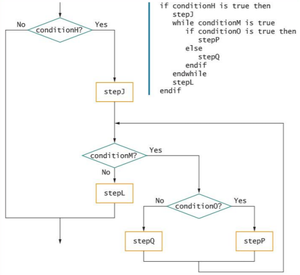
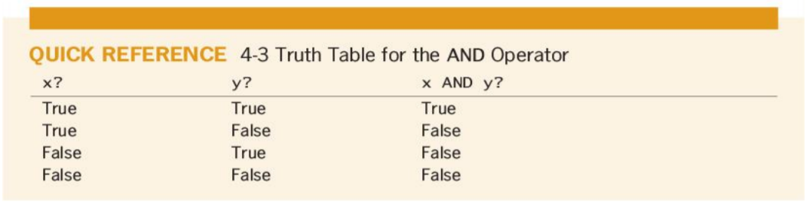
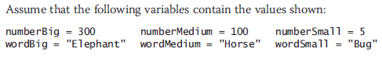
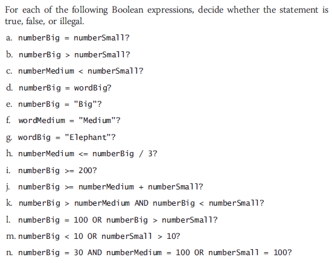

Control Structures

Instructor: Chris Fulton
Learning Objectives
- Discuss the flow of control using structures
- Sequence, Selection and Looping structures
- Structure Considerations
- Explore boolean expressions that can be used to make decisions
- Relational Comparison Operators
- Boolean - AND/OR Logic
- Perform basic decision making using if and switch statements
- Selection within Range
- Switch Statements
- Ternary
- Execute statements repetitively using while, do, and for looping structures
- Discuss issues pertaining to the comparison of certain types of data
Understanding
Flow Control

Learning Activity
Think through the steps it takes to make a peanut butter and jelly sandwich. Write down all of the steps to successfully make a sandwich.
Why Structure?
The Three Structures
Sequence ✦ Selection ✦ Looping
- Sequence
- Perform actions or tasks in order
- No branching or skipping any task
- Input/Output, Calculations, assignment
- Selection
- Ask a question, take one of two actions
- Often called if-then-else
- Dual-alternativeifsor single-alternativeifs
- Looping
- Repeat actions while a condition remains true
Sequence
Input/Output ✦ Calculation ✦ Declaring/Initializing Variables
- Do one process
- Do two process
- Do three process

Decision Structures
if statements ⛄ if/else statements ⛄ switch statements

Dual-alternative selection structure
int numOne = 2; int numTwo = 5;
if(numOne >= numTwo){
System.out.println("2 is greater than 5");
}else{
System.out.println("2 is not greater than 5");
}
Single-alternative selection structure
int numOne = 2; int numTwo = 5;
if(numOne <= numTwo){
System.out.println("5 is greater than 2");
}
Looping Structure
Iterations ✦ Repetition
- Do something repetitively - Do this until I tell you to stop
- Good for counting and iterating through list

A Few Considerations
One Entry Point
Every Structure should have one entry point and one exit point.
No Crossed Lines
Lines should never cross each other
Continous Flow
There should be a continuous flow to the program that makes logical sense.
Stacking Structures
Attaching structures end-to-end
Nesting Structures
Placing one structure within another
A basic example
Learning Activity - Unstructured
//Write pseudocode here
Quiz Question 1
int x = 1;
int y = 4;
if(x == 1){
for(int i = 0; i < 3; i++){
x++;
}
if(x >= 4){
System.out.println("x has changed values to");
}else{
System.out.println("x has not changed values")
}
}
Given the code above, how many total structures are presented?
Quiz Question 2
Given the unstructured program to the left, once structured, how many selection structures are presented?
Boolean Expressions
Relational Comparison Operators
- Relational comparison operators
- Six types supported by all modern programming languages
- Two values compared can be either variables or constants
- Any decision can be made with only three types of comparisons: =, >, and
Using AND Logic
Using AND Logic
Compound Condition
Asks multiple questions before an outcome is determined
AND decision
Requires that both of two tests evaluate to true.
Requires a nested decision or a cascading if statement
Conditional AND operator
Ask two or more questions in a single comparison.
Each Boolean expression must be true for entire expression to evaluate to true
Using OR Logic

Using OR Logic

Compound Condition
Asks multiple questions before an outcome is determined
OR decision
Take action when one or the other of two conditions is true
Example - “Are you free for dinner Friday or Saturday?”
Conditional OR operator
Ask two or more questions in a single comparison.
Only one Boolean expression in an OR selection must be true to produce a result of true
Learning Activity
Complete the following activity using the diagram below
 Quiz Question 3
int x = 1;
int y = 4;
if(x == 1){
if(x >= 4 && y == x ){
System.out.print("Yup ");
}else{
System.out.print("Nope ");
}
}
System.out.print("Ok");
Given the code to the left, select the option that outputs to the console.
Selections within Range
Range Check - Compare a variable to a series of values between limits
Use the lowest or highest value in each range
Adjust the question logic when using highest versus lowest values
Consider if end points of the range should be included
Yes: use >=or <=
No: use < or >
int LOWER_DRIVER_AGE = 16, UPPER_DRIVER_AGE = 120, age = 22;
if(age >= LOWER_DRIVER_AGE && age <= UPPER_DRIVER_AGE){
System.out.println("Able to rent car for Harvey Car Rental");
}else{
System.out.println("Not able to rent car from Harvey Car Rental");
}
Selections within ranges

Learning Activity - Code in Java
Common Errors When Using Range Checks
- Avoid a dead or unreachable path.
- Don't check for values that can never occur
- Requires some prior knowledge of the data
- Never ask a question if there is only one possible outcome
- Avoid asking a question when the logic has already determined the outcome
- Avoid testing the same range limit multiple times
Switch Statement
int day = 2;
switch (day) {
case 1:
System.out.println("Monday");
break;
case 2:
System.out.println("Tuesday");
break;
case 3:
System.out.println("Wednesday");
break;
case 4:
System.out.println("Thursday");
break;
case 5:
System.out.println("Friday");
break;
case 6:
System.out.println("Saturday");
break;
case 7:
System.out.println("Sunday");
break;
default:
System.out.println("Invalid input");
}
Similar to nested if/else statments, but some would consider a simpler syntax.
Consider using switch when making few comparison and data you deciding doesn't change often. Such as:
Days of week, Meal selection, Calendar months, etc..
The break keyword allows you to immediately break out of the structure
The default keyword specifies some code to run if there is no case match
Ternary Operator
double studentLoanSingle = 1250000.00;
double studentLoanJoint = 250000.00;
double singleAnnualSalary = 120000.00;
double jointAnnualSalary = 255000.00;
//Determine deduction if Single
String singleQualify = singleAnnualSalary <= studentLoanSingle ? "$10,000 deduction " : "$0 deduction";
//Determine deduction if Joint income
String jointQualify = jointAnnualSalary <= studentLoanJoint ? "$10,000 deduction " : "$0 deduction";
System.out.println("If single, based on Annual Salary you will receive " + singleQualify);
System.out.println("If joint, based on Annual Salary you will receive " + jointQualify);
Ternary Operator: Simlar to if/else structure but simpler syntax
Quiz Question 4
final double STUDENT_LOAN_SINGLE = 1250000.00;
double singleAnnualSalary = 125000.00;
//Determine deduction if Single
String sQualify = singleAnnualSalary > STUDENT_LOAN_SINGLE ? "$10,000 deduction " : "$0 deduction";
System.out.println("If single, based on Annual Salary you will receive " + sQualify);
Given the code above, which option will output to the console?
Quiz Question 5
final int LOWER_DRIVER_AGE = 16, UPPER_DRIVER_AGE = 120;
int age = 22;
if(age < LOWER_DRIVER_AGE || age >= UPPER_DRIVER_AGE){
System.out.println("Not able to rent car");
}else{
System.out.println("Able to rent car");
}
Given the code above, which of the statments is incorrect?
Learning Activity
1) Identify all possible structures
Comment each section of your code
2) Code in Java
Import Random Class Library; use only sequence and selection structures
Looping Structure
Looping/Iteration
- Loop: a structure that repeats actions while some condition continues
- As long as a condition(s) remains true, the statements in a while loop’s body execute
- Use Cases:
- Validating Data by Defensive Programming | Outputing Structure Data | Reprompting | Repetitive Output(Such as counting, using math, or general text ouput)

Three statements needed for Looping
Initial loop control variable initialized before entering loop
Loop control variable tested
Body of loop must alter value of loop control variable
int initialValue = 0; //Initial Value for Control variable
int endValue = 7;
String topics [] = { "Structures", "Decision Making", "Looping",
"Arrays", "Modularization", "Object-Oriented Design", "UML"};
while(initialValue < endValue){ //Control variable tested
System.out.println("Week " + (initialValue + 1) + " is " + topics[initialValue]);
initialValue++; //Control Variable altered
}
System.out.println("Finished");
Definite Loop with Counter
- Definite Loop - Executes a predetermined number of times
- Counter-controlled Loop - Program counts loop repetitions
- Loop control variables altered by:
- Incrementing
- Decrementing
Loop with Sentinel Value
- Indefinite Loop
- Performed a different number of times each time the program executes
- The user decides how many times the loop executes
- Three steps should occur in every properly functioning loop
- Provide a starting value for the variable that will control the loop
- Test the loop control variable to determine whether the loop body executes
- Alter the loop control variable
Priming Input
- Priming Input/priming read)
- Reads the first input data record
- Helps keep the program structured
- Watch for unstructured loops that do not follow this order
- First ask a question
- Take action based on the answer
- Return to ask the question again

Activity 5

Step 1
Look up the formula for the fibonacci sequence and do research on this mathematical phenomenon
Step 2
Think through and apply the correct structures to fulfill the requirements of the sequence.
Step 3
Code the program in Java
Nested Loops Structure
Nested Loop
loops within loops
Outer Loop
the loop that contains the other loop
Inner Loop
the loop that is contained
Example of Two nested Loops
String days [] = {"Mon.", "Tue", "Wed.", "Thur", "Fri"};
String meals [] = {"Breakfast", "Lunch", "Dinner"};
String breakfastItems [] = {"OJ","Toast", "Banana"};
String lunchItems [] = {"Juice","Pizza", "Pear"};
String dinnerItems [] = {"Hi-C","Ribs", "Apple"};
int firstIterator = 0, secondIterator = 0, thirdIterator = 0;
System.out.println("Weekly Menu \n");
while(firstIterator < 5){
System.out.println(days[firstIterator]);
secondIterator = 0;
while(secondIterator < 3){
System.out.println(" " + meals[secondIterator]);
thirdIterator = 0;
while(thirdIterator < 3){
if(secondIterator == 0){
System.out.println(" " + breakfastItems[thirdIterator]);
}else if(secondIterator == 1){
System.out.println(" " + lunchItems[thirdIterator]);
}else{
System.out.println(" " + dinnerItems[thirdIterator]);
}
thirdIterator++;
}//End of inner most loop
secondIterator++;
}//end of second inner loop
firstIterator++;
}//End of first loop
System.out.println("Weekly Menu has been outputted");
Nested Loops Functional
Nested loops never overlap. An inner loop is always completely contained within an outer loop
The total number of iterations executed by a nested loop is the number of inner loop iterations times the number of outer loop iterations
An inner loop goes through all of its iterations each time its outer loop goes through just one iteration
Using For Loops
- Definite Loop
- Provides three actions in one structure
- Initializes | Evaluates
- while statement could be used in place of for statement
- Pretest Loop: the loop control variable is tested before each iteration
- for loops and while loops are pretest loops - Posttest: the loop control variable is tested after each iteration
- do...while is a posttest loop
Activity 6

Step 1
Observe the diagram above and declare variables for the data you will use in program
Step 2
Think through and apply the correct structures to fulfill the requirements of the program.
Step 3
Code the program in Java and output the month day along with the correct number of days for each month.
Loop Use Cases
- Using a loop to accumulate totals
- - Examples
- Business reports often include totals
- List of real estate sold and total value
- Accumulator: variable that gathers values
- - Similar to a counter
- Counter increments by 1
- Accumulator increments by some value
- Accumulators require three actions
- Initialize the accumulator to 0
- Accumulators are altered: once for every data set processed
- At the end of processing, accumulators are output
Using loops to validate data
- Defensive programming: preparing for all possible errors before they occur
- When prompting a user for data, no guarantee that data is valid
- Good defensive programs try to foresee all possible inconsistencies and errors
- Validate data: make sure data falls in acceptable ranges (month values between 1 and 12)
- GIGO: Garbage in, garbage out
- Unvalidatedinput will result in erroneous output
Limiting a reprompting Loop

- Reprompting can be frustrating to a user if it continues indefinitely
- Maintain a count of the number of reprompts
- Forcing a data item means:
- Override incorrect data by setting the variable to a specific value